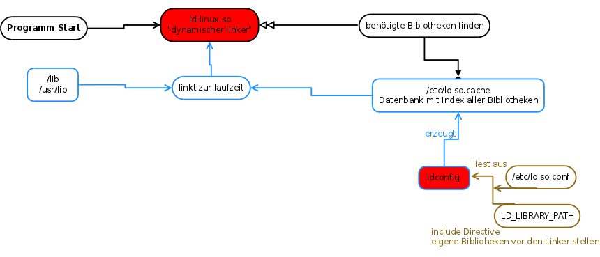

Created Sonntag 24 April 2011
Der Linux Linker und ldconfig

ldconfig
→ aktualisieren des Bibliothekenspeichers */etc/ld.so.cache aus der Datei */etc/ld.so.conf oder LD_LIBRARY_PATH
Linux Wissen:FHS:etc
-v → verbose
-N → aktualisiert nur Links zu den Bibliotheken
-X → aktualisiert nur die Bibliotheken
-n <PATH> → nur <PATH> akutalisieren
-f <DATEI> → eine andere <Datei> als Konfigurationsdatei bestimmen
-C <DATEI> → eine andere <DATEI> als Cache bestimmen
-r <DIR> → das angegebene Verzeichnis als / behandeln
-p → anzeigen des Inhalts von */etc/ld.so.cache
Hinweis: Mit ldconfig -p |grep <LIB> kann man herausfinden ob eine <LIB> dem System bekannt ist.
strip → entfernt Symboltabellen von Programmen
--strip-debug → nur debugging Informationen entfernen
--strip-all → alle Symbole entfernen, dies macht in den meisten Fällen das Programm unbrauchbar
--only-keep-debug → das Gegenteil von --strip-debug, seperaten erzeugen von Debugging Symbolen
-v → verbose
*/lib/libc.so.6
Linux Wissen:Bibliotheken:dynamische Bibliotheken
ldd → gibt Informationen über die zur Laufzeit benötigten Programme
Hinweis:
ldd $(which <Befehl>)
→ anzeigen aller benötigten Bibliotheken von <Befehl>